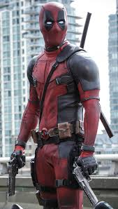

A superhero is a person who does heroic deeds and has the ability to do them in a way that a normal peson couldn't. So in order to be a
superhero, you need a rower that is more exceprional than any power a normal human being could possess, and you need to use
that power to accomplish good deeds. Otherwise, a policeman or a fireman could be considered a superhero.
For instance, a good guy fighting a bad guy could be just a regular police story or detective story or human-interest story. But if it’s a
good guy with a superpower who is fighting a bad guy, it becomes a superhero story. If the good guy is doing something that
normal human being couldn’t do, couldn’t accomplish, then I assume he becomes a superhero.
Article on superheroes at OUP blog
"
Deadpool
Deadpool is the character that this wiki is based off of. He stars in several comics, first appearing in New Mutants #98 back in February 1991. Deadpool, also known as Wade Wilson, was created by artist and writer Rob Liefeld, as well as writer Fabian Nicieza. He was originally depicted as a supervillain in both New Mutants and X-Force, but has since become an antihero. He is disfigured and mentally unstable with chunks of memory missing. Deadpool is known under the editorial names Merc with a Mouth and Regenerating Degenerate" thanks to his talkativity and constant breaking of the fourth wall for comedic effect."